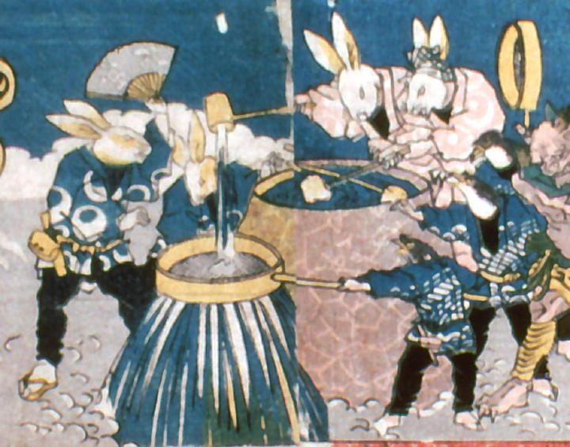

兎と雀たちが、雲の上にある水瓶から柄杓で水をすくい、下界に流している。雨を降らせているようである。揃いの法被を着た職人姿で描かれている。
著作者：歌川貞重／出典：親書誌：A5_pushkin_0033：教訓三界図会；キョウクンサンガイズエ／日付：2011／資源識別子：A5_pushkin_0033_0004_0000
Copyright (c)2010- International Research Center for Japanese Studies, Kyoto, Japan. All rights reserved.